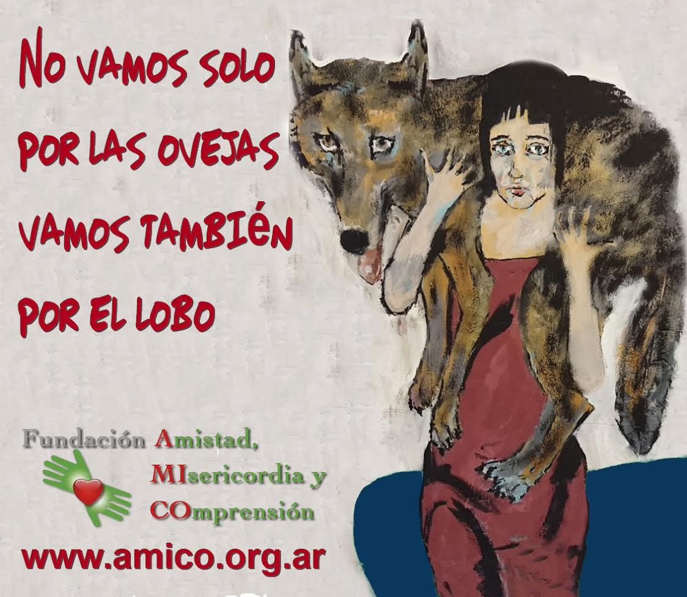

Blog
La Editorial AMICO depende de la Fundación Amistad, Misericordia y Comprensión y trata de cristalizar en diversas publicaciones el espíritu de la misma: la inclusión de todas las personas, en sus diversas situaciones vitales, en el misterio de la salvación gratuita regalada por Dios a toda la humanidad. Surgió esta empresa editorial en 1996, siguiendo la invitación de san Juan Pablo II de prepararse al Año Santo de la Redención en el 2000. Por eso su primer libro fue “Oraciones al Espíritu Santo, Señor y Dador de Vida”, en el año dedicado a esa Divina Persona. Luego siguieron cientos de libros devocionales –oraciones y novenas– con la intención de animar bíblicamente la devoción popular. Una colección de libros infantiles para los más pequeños: “Mi primer encuentro con Jesús” y otra para los un poco más grandes: “Dejen que los niños vengan a mí”. Algunas obras de y acerca de San Agustín de Hipona y tres diccionarios de Biblia, preparados por el Dr. Luis Heriberto Rivas y uno de Liturgia, hecho por el Presidente de la Sociedad Argentina de Liturgia, Pbro. Ricardo Dotro y por nuestro Director, Mgter. Gerardo García Helder. Siempre procuramos que los precios sean los más accesibles y que la calidad de los productos sea la mejor posible.